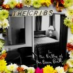
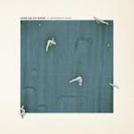
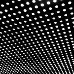

Music Reviews
-
Mount Eerie Clear Moon
Clear Moon, one of two albums Mount Eerie, a.k.a Phil Elverum, will be releasing this year, is a cohesive and synthesized product of its creator’s influences.
Sean Caldwell reviews... -

The Cribs In The Belly Of The Brazen Bull
The Cribs release their fifth studio album, back with the original line-up of the three Jarman Brothers, and it is a very personal affair indeed.
Matt Bevington explains... -

Cold Specks I Predict a Graceful Expulsion
Cold Specks, the moniker of 24 year old Canadian Al Spx(also a pseudonym), looms with a nimble, brooding debut that, more than anything, showcases her throaty, vinegary inflection.
Juan Edgardo Rodríguez grabs a coat... -
Tenacious D Rize of the Fenix
The D is back to **** your **** with their giant rock ****s
Alan Shulman reviews -

Here We Go Magic A Different Ship
On a sun-drenched morning over the hills of Glastonbury, the doe-eyed; slack-jawed, revelling masses stood soaked with a hazy, collective nausea. On stage, Here We Go Magic, in much the same contortions, struggled with a slot on the bill which requires all the enthusiasm and self-belief anyone could muster.
Matt Bevington continues the story... -
Death Grips The Money Store
Death Grips may have announced themselves as one of the most exciting voices in hip-hop with last year's Ex Military, but it wasn't exactly much fun to listen to. Will the influence of a major label on this second album change matters?
Mark Davison had a full-blown panic attack listening to this record... -

Beach House Bloom
Over two years removed from the critically lauded Teen Dream, Beach House are back with their fourth LP and first misnomer.
Forrest Cardamenis cannot... -

Royal Headache Royal Headache
Fronted by a singer with a soulful delivery, the Australian garage band makes combustible pop tunes that harken back to mod punk exuberance and frolicky rhythm and blues.
Juan Edgardo Rodríguez can do a pretty mean falsetto... -
Best Coast The Only Place
Best Coast follow up their debut of super-simplistic, sunny jangle pop with cleaner production and a self-described "grown-up" new sound. But is this really the sound of a band maturing?
Stephen Wragg reviews... -

Andrew Bird Break It Yourself
Andrew Bird's hardcore rap album. Just kidding, it's another album of folky baroque pop.
James McKenna reviews...